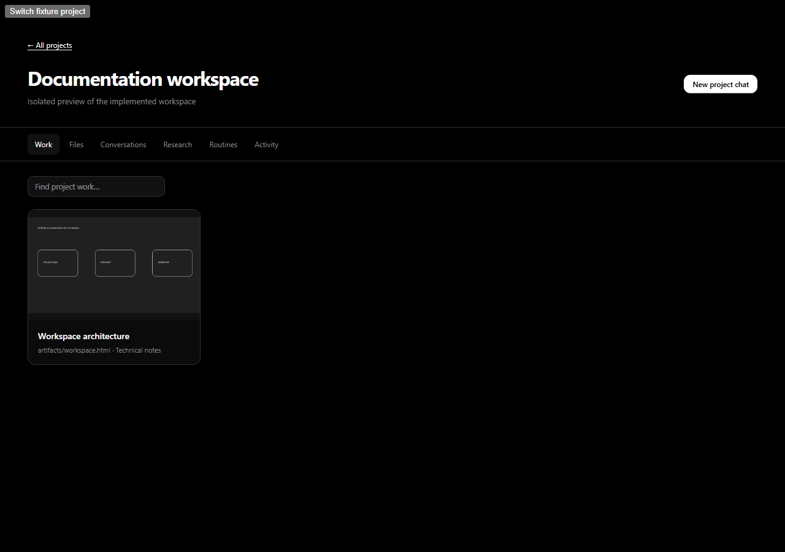
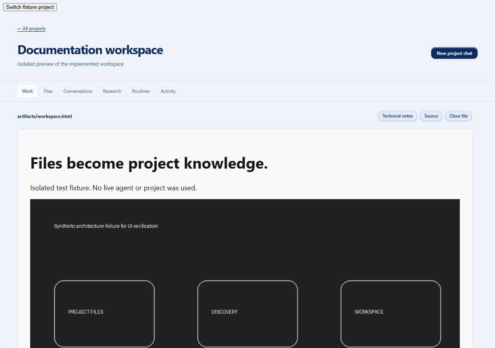
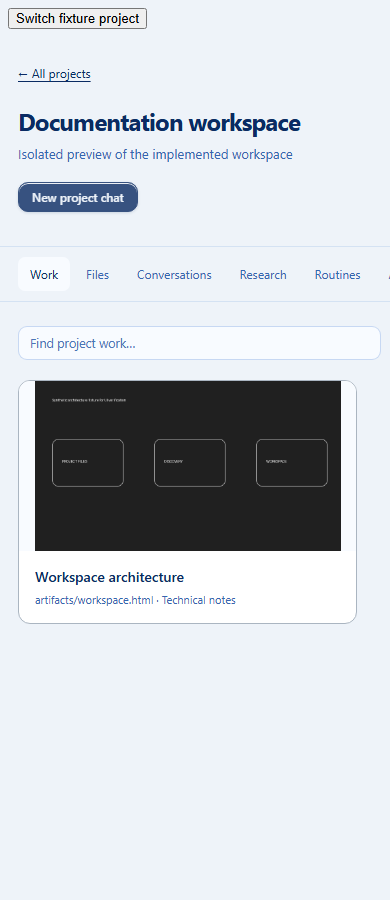

EchoSpeak · Project documentation
The files are the workspace.
Keep the technical record in Markdown. Show the result in HTML. EchoSpeak brings both into view without a handoff or another model call.
artifacts/topic.html
artifacts/media/
Work first. Less machinery.
One gallery for project documents and native Echo artifacts. Technical notes sit beside the visual report. Earlier imported reports remain available.

A report gets room to breathe.
Large HTML previews, direct technical-note access and a source toggle. Project-local images retain their original resolution.

The same workspace, at a smaller width.
The gallery becomes a single column. Controls wrap, and the resource tabs scroll within their own navigation area.
Opening the paired Markdown gives agents and developers the implementation detail without asking them to interpret a visual presentation.
What changed underneath
- Visible file discovery and five-second refresh replace manifest syncing.
- One portable skill body, a small Claude adapter and short project instructions.
- Optional Echo skill import still requires owner review and approval.
- Earlier records, versions, conversations and user files are preserved.

Verified, with clear limits.
68 focused offline contracts passed; one symlink test was skipped because this Windows environment requires additional permission to create symlinks. Frontend type checking, the existing 153 frontend tests and production build passed. The skill package passed format validation.
Headless Chromium checked dark desktop, light square-width and light narrow layouts; local images; technical notes; source/preview; gallery and open-document refresh after actual fixture-file edits; project switching; read-only workspace requests; and optional skill import stopping at review. No browser exceptions or external requests were observed.
Manual evaluation remains for real agent authoring, large projects and the installed Windows application. No paid model was used, no active app session was restarted and no new installer was published.